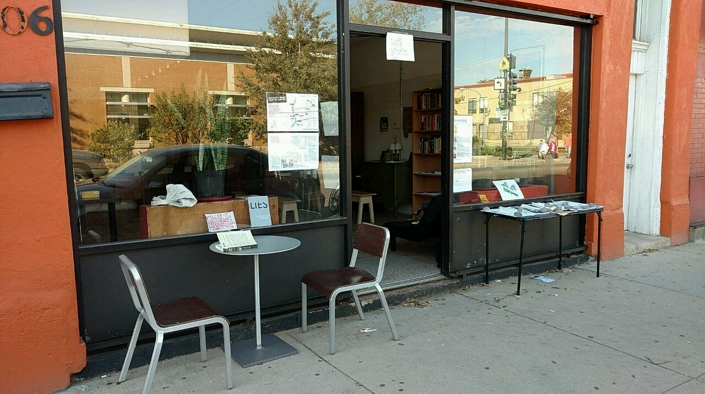

Bricolage opened in October 2016 as a volunteer-run and donation-financed partisan social center and library. Within three weeks, our vibrant group has quickly assembled a cinema, library, kitchen, and social force. We’ve sent caravans to demonstrations, tour groups to other infoshops, and held several film events.
Bricolage abrió en octubre de 2016 un voluntario de gestión y centro social partidario de donación-financiado y biblioteca. Dentro de tres semanas, nuestro grupo ha reunido vibrante rápidamente una sala de cine, biblioteca, cocina, y la fuerza social. Hemos enviado caravanas a manifestaciones, grupos de turistas a otros infoshops, y llevamos a cabo varios eventos cinematográficos.
Our space was founded on autonomist principles- oversimply, an environment where no one has power over anyone else. Decisions about the space are made during our Wednesday evening collective meetings, where we discuss housekeeping, upcoming events, and scheduling. The meetings are open to anyone.
Nuestro espacio fue fundada en principios- autonomista oversimply, un entorno en el que nadie tiene poder sobre nadie más. Las decisiones sobre el espacio se hacen durante la noche nuestros encuentros colectivos miércoles, en las que analizaremos limpieza, próximos eventos, y programación. Las reuniones están abiertas a cualquier persona.